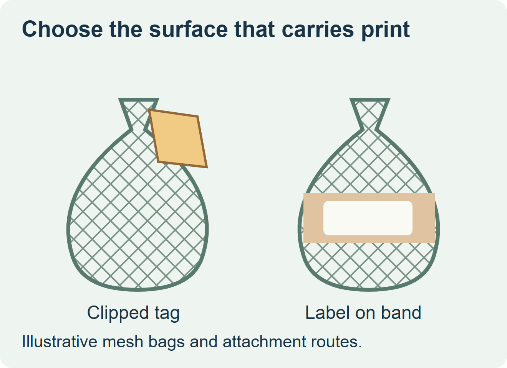
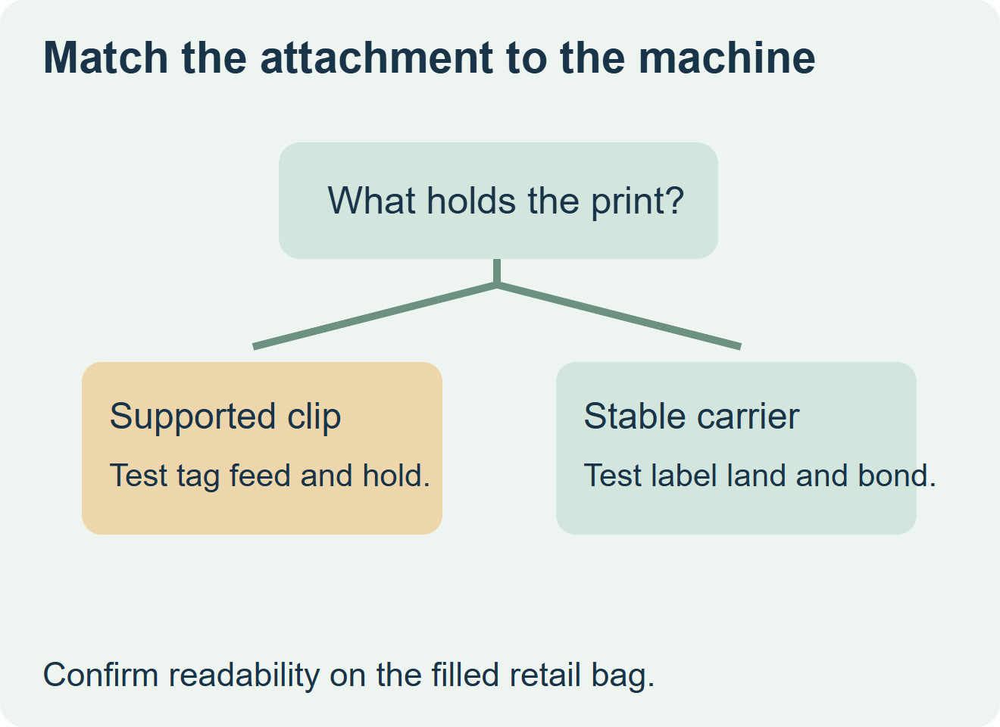

Use a closure-mounted tag when the mesh bag has no suitable solid label surface and the closing equipment supports the tag. Consider a pressure-sensitive label if the bag already has an approved solid carrier that can be presented consistently at application. Evaluate the attachment on the filled bag before quoting production quantities.


Start with what physically holds the print
On a mesh-only pack, a flat sticker can bridge holes and contact only parts of the net. A clipped tag relies on the closure, while an adhesive label on a band relies on the carrier surface and its own bond. Reflex describes clip-mounted tags and heat-sealed bands for netted produce, including different ways to add variable information. These are specialist examples; use the format supported by your actual machine and pack. Reflex’s tag and band descriptions
| Available interface | Order route to evaluate | Filled-pack checks |
|---|---|---|
| Qualified closure and tag feed | Tag compatible with the specified clip and feed, with the agreed print surface | Tag retention, orientation, readability and access to any required printed or overprinted field. |
| Stable approved band or solid panel | Pressure-sensitive label sized to the available landing area | Application contact, edge position, legibility after cold handling and access at checkout. |
| Mesh only and no supported attachment | Ask the pack system provider to qualify a tag or add a compatible carrier | Check the new assembly before choosing label stock or release quantity. |


Check the variable fields at the real packing stage
Decide which fields are fixed and which are assigned at packing, such as a lot or weight field when used. Give the printer the material that the actual marking device will see. A printable test strip is useful for initial compatibility; confirm the full field on a filled pack that has moved through closure, handling and the expected receiving view.
Compare the complete accepted assembly on the quote, including carrier or tag, any secondary label, printing and application. Ask the net equipment specialist about the closure format. Send the label converter the exact band surface and dimensions when a pressure-sensitive label is part of the design.
Discuss the unresolved label requirement
Send a filled mesh bag, closure or packing-machine model, the usable solid carrier surface if present, the artwork and variable fields, handling conditions and quantity. Confirm separately which tags, bands and closures the equipment supplier supports. Review food label options and prepare a label specification inquiry. The contact page opens an email draft and lists email or WhatsApp for attachments. Supply, proof options, testing, pricing and timing require project confirmation.